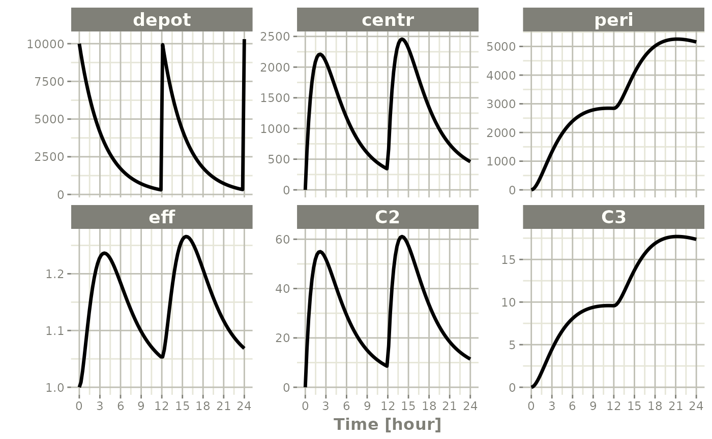
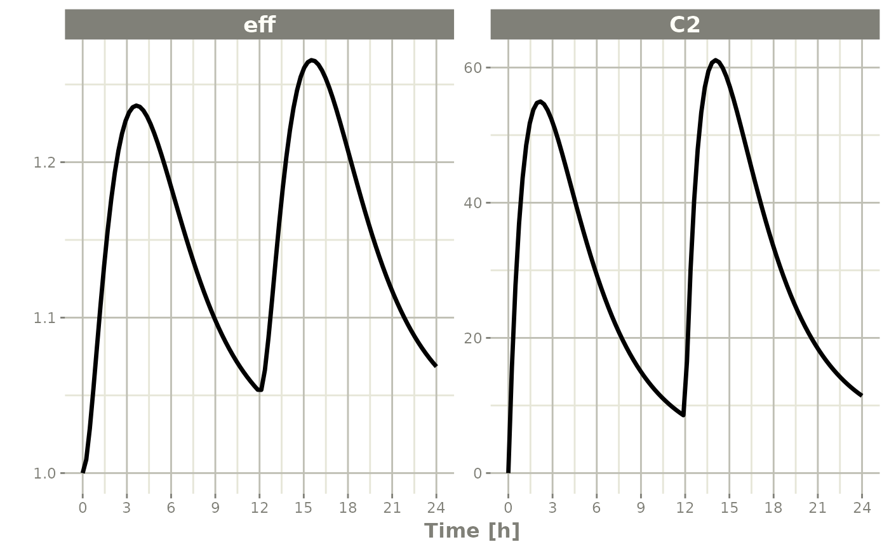
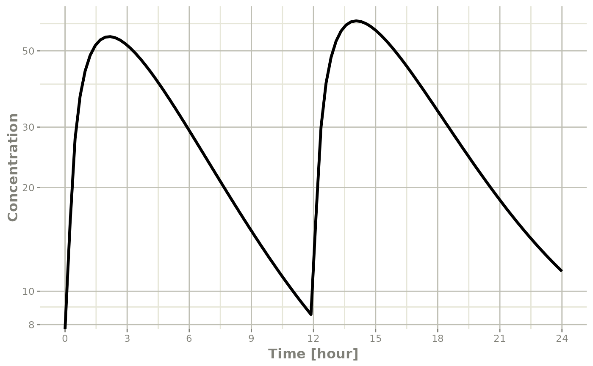
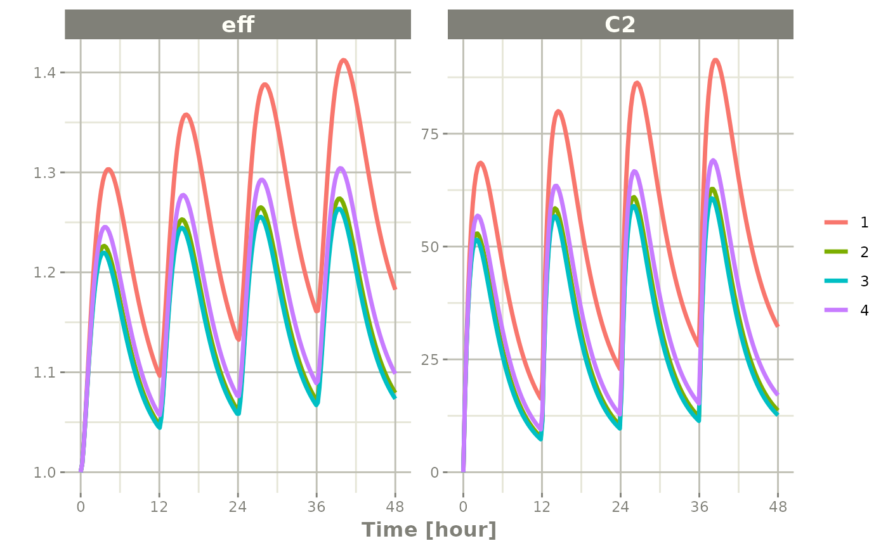
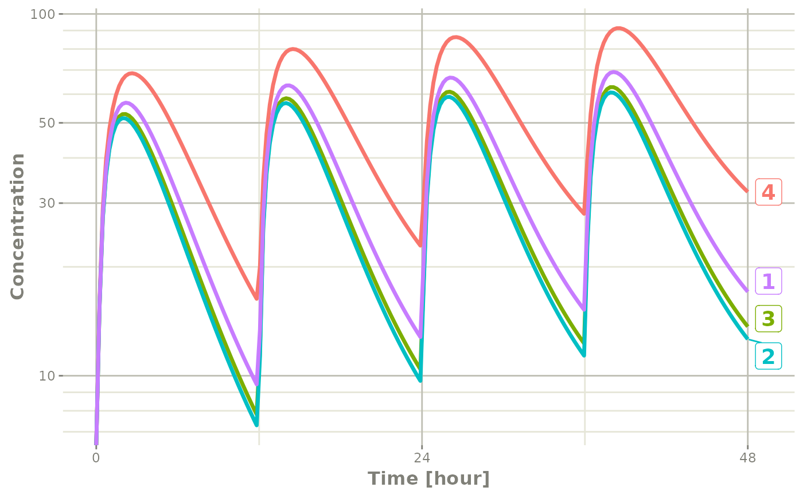
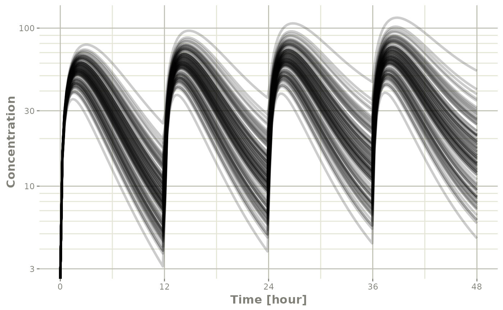
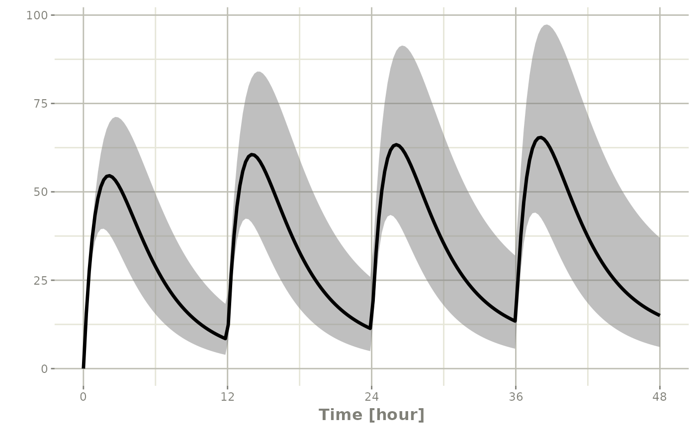

Plotting in rxode2
Setting up model for plotting explanation
The first step to explain the rxode2 model plots is to setup:
- An rxode2 model
- An event table
- A solved object
## rxode2 5.1.8.9000 using 2 threads (see ?getRxThreads)
## no cache: create with `rxCreateCache()`
## Model from rxode2 tutorial
m1 <- function() {
ini({
KA <- 2.94E-01
CL <- 1.86E+01
V2 <- 4.02E+01
Q <- 1.05E+01
V3 <- 2.97E+02
Kin <- 1
Kout <- 1
EC50 <- 200
## Added modeled bioavaiblity, duration and rate
fdepot <- 1
durDepot <- 8
rateDepot <- 1250
})
model({
C2 <- centr / V2
C3 <- peri / V3
d/dt(depot) <- -KA * depot
f(depot) <- fdepot
dur(depot) <- durDepot
rate(depot) <- rateDepot
d/dt(centr) <- KA * depot - CL * C2 - Q * C2 + Q * C3
d/dt(peri) <- Q * C2 - Q * C3
d/dt(eff) <- Kin - Kout * (1 - C2 / (EC50 + C2)) * eff
eff(0) <- 1
})
}
ev <- et(timeUnits = "hr") |>
et(amt = 10000, ii = 12, until = 24) |>
et(seq(0, 24, length.out = 100))
s <- rxSolve(m1, ev)## ℹ parameter labels from comments are typically ignored in non-interactive mode## ℹ Need to run with the source intact to parse commentsDefault rxode2 plot
The default plot in rxode2 is to plot time versus
state or calculated lhs values:
plot(s)
Things to note:
First, these plots are actually ggplot2 plots and can be
modified by the standard ggplot2 grammar of graphics
Also note that the plot method for rxSolve
objects can currently use some of the arguments of the default plot
method:
loga character string which contains"x"if the x axis is to be logarithmic,"y"if the y axis is to be logarithmic and"xy"or"yx"if both axes are to be logarithmic. If available, this will use thexgxrxgx_scale_x_log10()andxgx_scale_y_log10()functions.xlabThis is a bit different than simply supplying the x-label throughggplot2, it will retain the unit information originally supplied in the event table. Also note, if available, this unit information is used will be used to have more meaningful ticks withxgx_scale_x_time_units()ylabThis supplies the y label
The following are currently unsupported: a. type b.
xlim c. ylim d. main e.
sub f. ann g. axes
Subsetting plots
While this is very interesting, it is often more useful to subset
plots based on values you are more interested in; For example, it is
more interesting in this plot to eff and C2.
To do this, you simply specify the interesting items after the plot
function. For instance:
plot(s, C2, eff)
Semi-log plots
Semi-log plots of PK concentrations are very common; To do this you
simply need to use log="y"
plot(s, C2, log="y", ylab="Concentration")## Warning in ggplot2::scale_y_log10(..., breaks = breaks, minor_breaks =
## minor_breaks, : log-10 transformation introduced infinite
## values.
This uses the xgx_scale_y_log10() when available to more
clearly show the semi-log nature of the plot.
Plots with multi-subject plots
If you have multi-subject plots you can easily plot applying the same principles as above. To illustrate this plot, lets expand an event table to include a plot of 4 subjects with lognormal random variability between subjects;
# Setup the new problem
m2 <- function() {
ini({
KA <- 2.94E-01
TCL <- 1.86E+01
V2 <- 4.02E+01
Q <- 1.05E+01
V3 <- 2.97E+02
Kin <- 1
Kout <- 1
EC50 <- 200
## Added modeled bioavaiblity, duration and rate
fdepot <- 1
durDepot <- 8
rateDepot <- 1250
eta.Cl ~ 0.4^2
})
model({
CL <- TCL * exp(eta.Cl)
C2 <- centr / V2
C3 <- peri / V3
d/dt(depot) <- -KA * depot
f(depot) <- fdepot
dur(depot) <- durDepot
rate(depot) <- rateDepot
d/dt(centr) <- KA * depot - CL * C2 - Q * C2 + Q * C3
d/dt(peri) <- Q * C2 - Q * C3
d/dt(eff) <- Kin - Kout * (1 - C2 / (EC50 + C2)) * eff
eff(0) <- 1
})
}
# Create the event table
ev <- et(timeUnits = "hr") |>
et(amt = 10000, until = units::set_units(3, days), ii = 12) |> # loading doses
et(seq(0, 48, length.out = 200)) |>
et(id = 1:4)
s <- rxSolve(m2, ev)## ℹ parameter labels from comments are typically ignored in non-interactive mode## ℹ Need to run with the source intact to parse commentsOnce that is complete, you may plot it by the same method:
plot(s, C2, eff)
Notice that this is colored by each individual and labeled with a legend.
If you are only interested in the concentration, it produces a similar plot:
plot(s, C2, log="y", ylab="Concentration")## Warning in ggplot2::scale_y_log10(..., breaks = breaks, minor_breaks =
## minor_breaks, : log-10 transformation introduced infinite
## values.
Notice that this plot each individual is labeled by an attached id to
let you know where the individual comes from. This is done by
ggrepel if it is available, otherwise a legend is
retained.
Multi-subject plots with large number of subjects
This can get a bit much when there are many subjects that are solved (in this example lets simulate 100)
ev <- et(timeUnits = "hr") |>
et(amt = 10000, until = units::set_units(3, days), ii = 12) |> # loading doses
et(seq(0, 48, length.out = 200)) |>
et(id = 1:100) # 100 subjects
s <- rxSolve(m2, ev)
plot(s, C2, log="y", ylab="Concentration")## Warning in ggplot2::scale_y_log10(..., breaks = breaks, minor_breaks =
## minor_breaks, : log-10 transformation introduced infinite
## values.
In this case, all the individuals are put on the plot in transparent grayscale and plot on the same pane. This allows the places where more subjects are present to be darker.
The number of individuals where the plots switch from legend to
grayscale is controlled by changing the options for
rxode2.spaghetti. ie.
options(rxode2.spaghetti=7). 7 individuals is the default
value when the plotting changes from individual to grayscale spaghetti
plots.
You can also create a confidence interval of these simulations with
confint:
s2 <- confint(s, parm="C2")## ! in order to put confidence bands around the intervals, you need at least 2500 simulations## summarizing data...doneAnd plot this with plot
plot(s2)